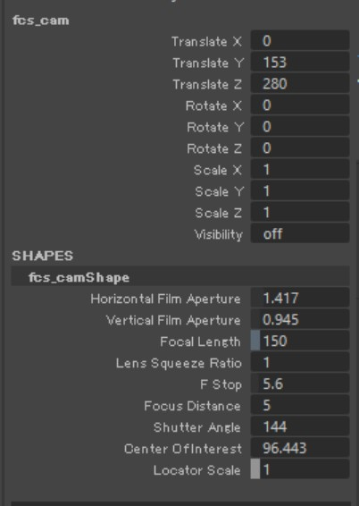
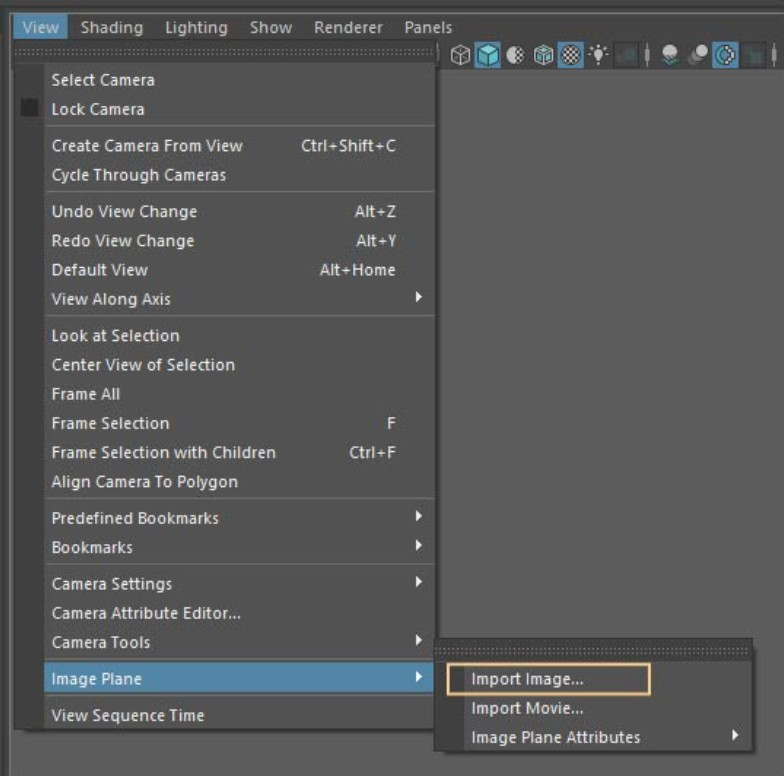
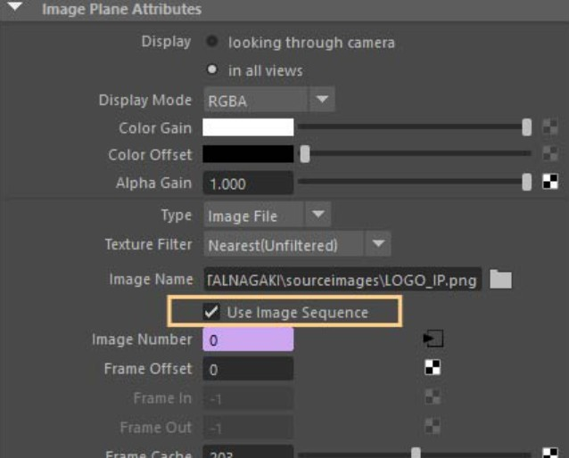

Tips
このページではFCSの便利なTipsや各機能について説明します。
FCSは、シーン内にFCS用のカメラが無い場合、perspのカメラの位置を参照してカメラを作成します。
常に一定の画角でプレイブラストを出力するためには、あらかじめ適切な位置やサイズのイメージプレーンをシーンに配置し、ベースシーンとして保存しておく方法を推奨しています。
※作成する前にFCSの設定ウィンドウFile＞Settings＞▼Mayaでカメラ名とイメージプレーン名がどのように指定されているかを確認してください。
以下fcs_cam、imagePlaneという名前が指定されているものとして説明します。
ベースシーンの作成
① FCS用のカメラを顔のモデルが中心に来るように配置します。
使用アトリビュート例：fcs_cam.translateY、fcs_cam.translateZ、fcs_camShape.focalLength
{kind=link}

② FCS用のカメラを使用した状態でView ＞ Image Plane ＞ Import Image...から静止画用イメージプレーンを配置します。
{kind=link}

③ イメージプレーンをお好みの大きさに変更し、配置したい場所へ移動します。
使用アトリビュート例：imagePlaneShape.depth、imagePlaneShape.sizeX、imagePlaneShape.sizeY、imagePlaneShape.offsetX、imagePlaneShape.offsetY

④ 静止画連番画像を再生するためにimagePlaneShape.useFrameExtensionをON（1）にします。
{kind=link}

⑤ Mayaシーンを保存し、File＞Session▶＞Info...からMaya Sceneに登録します。

レイアウトの変更方法
Viewウィンドウ → Layoutからレイアウトのプリセットを呼び出せます。
また、各ウィンドウはドラッグ＆ドロップでFCS内を移動・配置することができます。
お好きな配置で作業してください。
Viewウィンドウ → Layoutから変更したレイアウトを保存することも可能です。
Note
Viewウィンドウについての説明はユーザーガイド/Menu/viewをご覧ください。
保存したレイアウトのデータは以下のパスに格納されます。
C:\Users\[ユーザー名]\.fcs\Cortado\[FCSバージョン]\layouts\saved